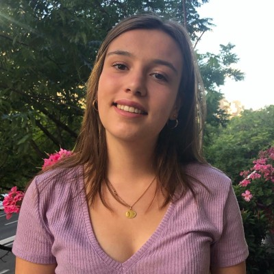
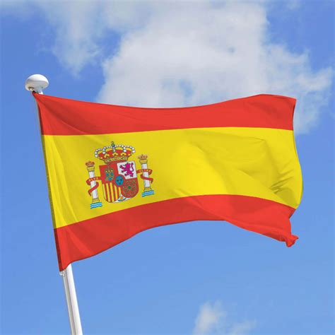

Héloïse Huchard
💜Hello everyone! My name is Héloïse Huchard. I am a first-year student at the Global BBA of ESSEC Business School in English track. Adaptable, curious, assiduous, and dynamic, I have developed communication and writing skills in both French and English. I have a great appetite for languages since I also practice Spanish and am interested in learning Mandarin. I really enjoy meeting new people and discovering new things!💜
RESUME📚PROFESSIONAL EXPERIENCES📚
I did a 3 weeks internship at "Wake Up Café", an association that helps the reintegration of prisoners. I was able to create and animate social network accounts; help write CVs and cover letters; organise events to raise awareness of the prisoners' cause; help with fundraising and partnerships; and run workshops with the people they support. This experience with this association has been very enriching from every point of view: on a personal level I have eliminated many prejudices I had about the prison environment. I gained in indulgence and understanding. I understood that the unknown was frightening and that I had to dare to cross this barrier. I was reinforced in the idea that it is important to be useful for others and to give of oneself, not only from a material point of view. From a "professional" point of view, I learned to take initiatives. Communication with the people I work with has enabled me to develop my ability to listen and exchange. I was also able to realise that I was able to integrate into a team that I did not know at all before.
I also did an internship at the "Alpha Palmiers" hotel in Lausanne, Switzerland. During this internship, I was able to experience several areas. I received an introduction to management; I was in charge of reception and welcoming foreign tourists; house keeping; service and cooking and preparation of seminars. During this internship, I was able to measure the rhythm of a working day, to understand the different jobs related to the hotel and restaurant industry. In the hotel and catering industry, many different professions with different skills work together and complement each other. At each level, each profession is essential to the smooth running of a 4-star hotel.
🧡🐘SARI ESSEC🐘🧡
As Vice President of the association "Soutien Associatif aux Ressources de l'Inde et du Népal" (SARI) within ESSEC, I can express my deep respect for otherness. We set up humanitarian exchanges, fundraising and partnerships with companies, communication on social networks and partnerships with NGOs.
🎓CERTIFICATIONS🎓
During my schooling, I obtained different academic degrees:
- Junior School Certificate with distinction (>16/20).
- General Economic and Social Baccalaureate with distinction (>16/20).
- European Section Baccalaureate (History in English)
I have also passed the IELTS English certification:
International English Language Testing System (IELTS), in September 2019.
During my studies at ESSEC, I had the opportunity to take additional courses called MOOCs on the Coursera platform. I decided to take :
- Excel Spreasheet Modeling at Harvard University.
- Geopolitics of Europe at Sciences Po Paris.
- Introduction to Communication Science at Amsterdam University.
✈🌎MEMORABLE TRAVELS🌎✈
Numerous family trips have allowed me to appreciate cosmopolitan and multicultural atmospheres. I had the chance to visit individually and itinerantly, favouring encounters and exchanges with the local populations. Two stays particularly marked me on the cultural level:
- the contrast of freedom between Hong Kong and the Chinese interior, which I had studied in the first year of high school for my research on the TPE. I was there at the time of the demonstrations. I saw both the economic dynamism and the control over the people.
- I also saw South Africa and the problems of Apartheid visible in the organisation of the cities and still marked in the relationships between people.

Of course, all the other trips also interested me: Japan, United States, Vietnam, Morocco, Canada, Italy, United Kingdom...
🏊‍♀️🖼️INTERESTS AND ACTIVITIES🖼️🏊‍♀️
LINGUISTIC STAYS :
I have also been able to do various language stays in English and Spanish speaking countries in international schools and with families, allowing me to live different experiences: United Kingdom, Ireland, United States and Spain.

MY PERSONAL ACTIVITIES AND INTERESTS :
- synchronised swimming, which brings me rigour and team spirit
- classical and modern choral singing in English
- political, economic and international news (TED Talks podcasts, newspapers...)
- theatres and exhibitions
- world music : French, English, Spanish, Russian, Arabic
MY COMMITMENT :- Food Bank in Paris since 2015 : Distribution of flyers in supermarkets ; Collection of food and hygiene products and Redistribution to needy people.
-Love in a Box" project with the American Church of Paris : Collection of necessities and gifts for underprivileged children and distribution of gifts for Christmas.